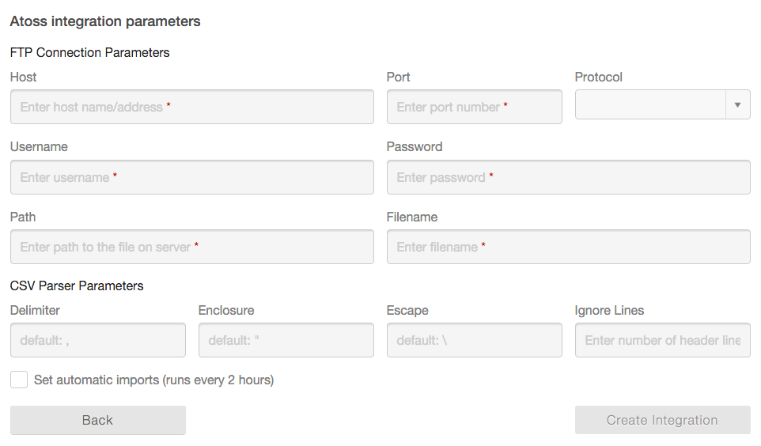

Loopline Systems API Documentation
Integrations
Loopline provides the following integrations to synchronize users from other software.
BambooHr Integration
For a complete guide to BambooHR Integration please visit this page: Setting up integration with BambooHR
Microsoft Azure Active Directory Integration

- Sign in to the Azure portal.
- Select Active Directory service.
- Select your desired directory.
- Go to the APPLICATIONS tab.
- Add a new application and select "Add an application my organization is developing" when prompted.
- Set the name "Loopline Systems", and select the type "WEB APPLICATION AND/OR WEB APIWeb application and/or web API".
- Put "http://loopline-systems.com" as both "SIGN-ON URL" and "APP ID URI".
- Inside the created application, go to "CONFIGURE".
- Copy the "Cleint ID" of the app and use it as "Client ID" integration parameter.
- Generate a new key, and use the key as "Client Secret" integration parameter.
- Give "Read directory data" permissions to this application.
- You can use your Azure domain (*.onmicrosoft.com) as your "Tenant ID" or to see you actual Tenant ID click on "View Endpoints" and use the GUID part of the URLs as your "Tenant ID".
You may also follow this guide: Integrating Applications with Azure Active Directory, or "Register your web server app with the Azure Management Portal".
Microsoft Office 365 Integration
You need an Azure subscription to access Office 365 Active Directory API.
The setup is similar to Microsoft Azure Active Directory Integration via Azure portal, as described above.
You may also follow the "Register your web server app with the Azure Management Portal" from this official guide Manually register your app with Azure AD so it can access Office 365 APIs.
Microsoft Windows Active Directory (LDAP) Integration
Parameters:
- Host: Host name or IP address of your Active Directory services server.
It is also possible to use a full LDAP URI of the form
ldap://hostname:portorldaps://hostname:portfor SSL encryption. - Port: Default port is 389.
- Username: Account name used to logon (RDN/Username/UserPrincipalName/SAM-Account-Name)
- Password: Password used to logon.
- Base DN: Base DN to fetch users from, For example:
DC=yourdomain,DC=com - Filter: It is possible to specify a filter to limit the objects that are fetched from the AD. The default filter is
(&(objectCategory=person)(objectClass=user)). See RFC4515 for more information on LDAP filters.
Atoss Integration
Atoss integrations works by importing the users list from a CSV file exported by Atoss, via a FTP connection.
This is how it works:
1. Export users from Atoss into a CSV file.
2. Put the file on a FTP server.
3. Setup Atoss integration in Loopline.Note: If the creation of the CSV file gets automated, Loopline can also run automatic import every 2 hours.
The format of the CSV file is described in the following section: CSV Upload.
Configure FTP connection:

CSV Upload
You can import your users via uploading a .csv (comma spearated) file.
The format of the CSV file should be as follow:
user id, first name, last name, email, position, supervisor, department, deactivated
- User Identity / Id (required): Give each user a unique identifer such as their ID Number or email address
- First Name (required)
- Last Name (required)
- Email Address (required)
- Position (optional)
- Supervisor Reference (optional): This can be the User ID or Email Address of the supervisor
- Department Name (optional): This field is not currently imported but it will be supported in future.
- Deactivated (optional): If this is set to either of Yes/True/1 the user will be deactivated
Sample:
- "123-abc“,"Christian“,"Kaller","christian.kaller@loopline-systems.com“,“Managing Director","", "Management“, "false"
- "456-xyz","Marco","Roßdeutscher","marco.rossdeutscher@loopline-systems.com","CTO","christian.kaller@loopline-systems.com"
- "789-lmn","Amir","Rahimi","amir.rahimi@loopline-systems.com","Developer","456-xyz", "IT", "true"
In the sample above:
- First line indicates a person with no supervisor.
- Second line has a supervisor referenced by email address. It ommits all the optional columns which is fine.
- Third line has a supervisor referenced by user id. This user is deactivated.
Options:
It is possible to set CSV parsing parameters in the config section:
- Delimiter: Default delimiter character is
,(comma) - (one character only) - Enclosure: Default encolsure character is
"(double quotes) - (one character only) - Escape: Default escape character is
\(backslash) - (one character only) - Ignore Lines: Number of lines to ignore from the begining of the file. Useful to skip header rows. Default is zero.